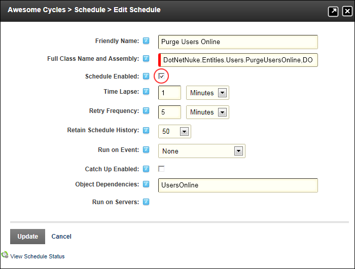

Enabling/Disabling a Task
How to enable or disable a task in the Schedule module.
- Navigate to Host > Advanced Settings >
 Schedule.
Schedule.
- Click the Edit
 button beside the task to be edited.
button beside the task to be edited.
- At Schedule Enabled, to enable this task - OR - to disable this task.

-